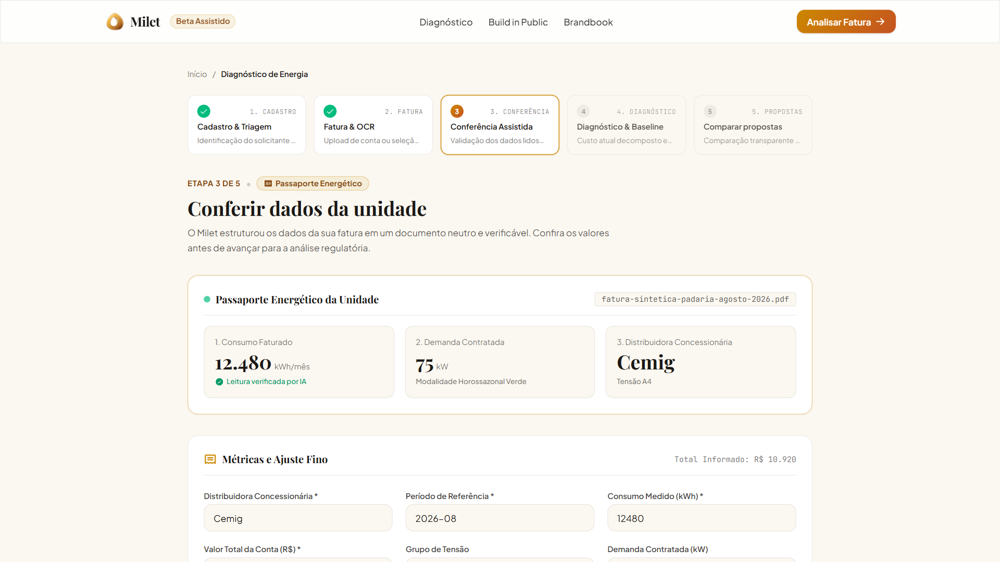
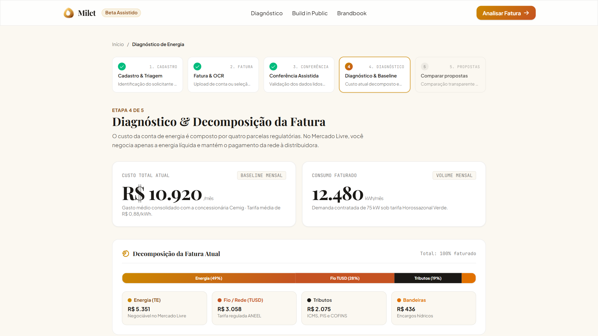
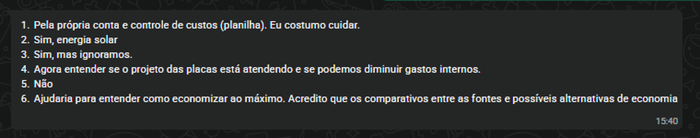
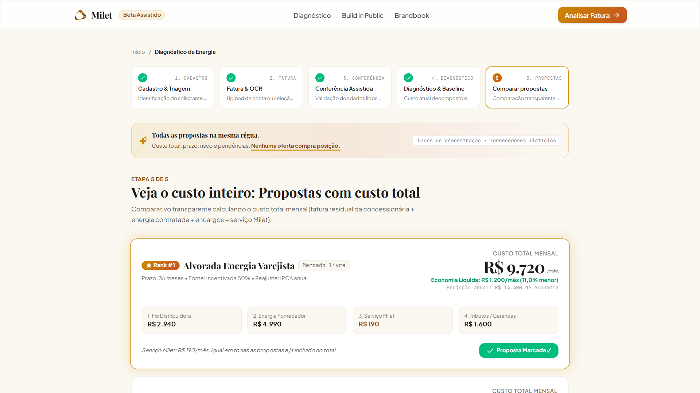

Engenharia da
decisão energética
Plataforma independente que lê faturas por OCR multimodal, consolida o Passaporte Energético e compara propostas do Mercado Livre (ACL) e Geração Distribuída em custo total (All-In) sem conflito de comissão.
Escopo de rigor: 76 testes automatizados + 2 entrevistas WhatsApp (Dacoli Alimentos e CGC Energia); produção e PostHog A/B como próximos passos.
Abertura do Mercado Livre e a lacuna de decisão para PMEs
Recorte do setor elétrico brasileiro: a liberdade tarifária avançou mais rápido que a infraestrutura neutra de decisão.
49,5% concentradas em Serviços (6.648) e Comércio (4.098) = 10.746 PMEs; 73% no eixo Sul-Sudeste.
4.827 migrações no 1T2026 (-36,5% vs 1T25), sendo 3.387 varejistas e 140 comercializadoras habilitadas na CCEE.
Recorte econômico após filtro de MMGD (CCEE); 220–230 mil UCs totais no Grupo A (ANEEL SIGEL).
- • REN ANEEL 1.000/2021 (art. 136): define o Grupo A (média/alta tensão) a partir de 30 kW de demanda contratada.
- • Portaria MME 50/2022 (vigência 01/01/2024): abriu integralmente o Grupo A ao Mercado Livre de Energia (ACL).
- • Lei 15.269/2025 + Decreto 13.097/2026: abertura da baixa tensão (< 2,3 kV) em 25/11/2027 (comercial/industrial — 6,2 mi UCs, 104 TWh EPE) e 25/11/2028 (demais).
- 1. Ingestão heterogênea: 104 distribuidoras brasileiras com layouts de fatura e regras tarifárias dispersas.
- 2. Normalização matemática auditável: traduzir R$/MWh, % OFF e R$/kWh para custo mensal equivalente sem caixa-preta.
- 3. Infraestrutura neutra escalável: reduzir o custo de transação das PMEs hoje e preparar a escala de milhões de UCs em 2027/2028.
Assimetria informacional, propostas incomparáveis e conflito de agência
Por que PMEs elegíveis ignoram propostas ou contratam com surpresa de fatura dupla e multa rescisória.
Propostas cotadas em R$/MWh, % OFF (sobre TE ou TE+TUSD) e R$/kWh omitindo encargos, garantias e tributos.
PME compara apenas o boleto da comercializadora sem somar TUSD demanda, iluminação e encargos da concessionária.
Corretor comissionado à vista (R$ 5–10 mil) prioriza fechamento rápido; após assinatura, pós-venda desaparece.
Fidelidade de 2–5 anos, denúncia de 180 dias (CCER) e troca de medidor sem trilha de acompanhamento.
“Prometeram 25% de desconto fixo, mas quando somo o boleto da comercializadora com o da concessionária, estou pagando quase a mesma coisa.” — Gestor PME MG (Reclame Aqui). Nota metodológica: reclamações são sinais qualitativos, não estatística de prevalência.
Elegível ao ACL (≥ 30 kW) e GD. Recebe ofertas em formatos incompatíveis; uma garantia bancária oculta de R$ 420/mês inverte o ranking real.
Literatura científica, regulação vigente e tese de integração contínua
Comparação estática de ofertas tende a virar infraestrutura pública; o diferencial reside na execução contínua auditável.
- • Sousa et al. (2019, RSER): mercados P2P e comunitários exigem transparência de preços e confiança operacional.
- • Capper et al. (2022, RSER, 139 artigos): revisão sistemática aponta fragmentação e baixa interoperabilidade entre agentes.
- • Gunarathna et al. (2022, ERSS, 50 proj.): barreiras regulatórias e custos de transação travam adoção em menor porte.
- • Schwidtal et al. (2023, RSER): agregadores e varejistas demandam padronização contratual e métrica líquida.
- • REN 1.000/2021 + Portaria MME 50/2022: elegibilidade ≥ 30 kW e abertura total do Grupo A; REN 1.009/2022 rege varejistas.
- • Lei 14.300/2022 + REN 1.059/2023: marco da MMGD/SCEE e escalonamento do Fio B.
- • Decreto 13.097/2026 (Art. 10) + Lei 15.269/25: baixa tensão 2027/28 e comparador público de ofertas pela CCEE.
- • CP ANEEL 07/2025 + Submódulo 1.8 CCEE: Open Energy e acesso LGPD ao histórico de medição (12 meses).
- • Brasil (Clarke, Electy, UC Livre, Lemon): intermediam ACL/GD; receita atrelada a comissão/success fee (Clarke: R$ 5–10 mil + R$ 100/mês).
- • Energy Ogre (Texas/ERCOT): assinatura fixa US$ 10–12/mês sem comissão de fornecedor (alinhamento fiduciário).
- • EnergySage (EUA): cotação padronizada lado a lado para reduzir assimetria.
- • Arcadia & Piclo (EUA/UK): APIs de dados de fatura (Arc) e marketplace regulado (Ofgem).
Com o Decreto 13.097/2026 (Art. 10), a vitrine simples de ofertas vira infraestrutura pública da CCEE. A lacuna tecnológica é a integração contínua: extrair a fatura (Passaporte Energético), rotear Grupo A/B, normalizar propostas em custo total (All-In), orquestrar workflow e auditar a economia realizada mês a mês.
6 Épicos, 28 User Stories e arquitetura de 4 portais RBAC
Evolução planejada em Especificação Orientada por Domínio (SDD) do núcleo determinístico à plataforma multitenant.
- • EP-01 · Intake & Passaporte Energético: triagem + OCR + conferência humana.
- • EP-02 · Diagnóstico & Elegibilidade: decomposição TE/TUSD/Tributos e rotas Grupo A/B.
- • EP-03 · Comparação All-In: ranking transparente por custo total sem venda de posição.
- • EP-04 · Fluxo de Propostas & RFQ: padronização de lances de comercializadoras/usinas.
- • EP-05 · Auditoria Pós-Migração: conferência da economia realizada e reavaliação.
- • EP-06 · Portfólio Multi-Unidade & RBAC: 4 portais (Consumidor, Comercializadora, Usina, Admin).
- • Fronteira Pública & Portais (Next.js 16 + React 19): /diagnostico, /roadmap, /build-in-public e futuros /portal/*.
- • Núcleo Puro (@milet/domain + src/domain): regras tarifárias e All-In sem dependência de framework.
- • Contratos (@milet/contracts + OpenAPI/JSON Schema): seams validados por Ajv.
- • Fundação Persistente (@milet/api NestJS + @milet/worker): PostgreSQL RLS, audit_events append-only e Outbox/DLQ.
Fluxo de 5 etapas navegável (/diagnostico?demo=1) com OCR Gemini + fallback determinístico.
100% de cobertura unitária no motor All-In e validação de fatura antes do envio.
Matriz OWASP ASVS L1 + LLM05 testada; RLS e triggers append-only validados em PGlite.
Testes automatizados verdes + entrevistas exploratórias reais orientando backlog de Projetos II.
Execução realizada (ago–nov/2026) vs. roadmap de Projetos II
Separação explícita entre entregas verificadas até 19/11/2026 e escopo planejado para Fev–Jun/2027.
Decisões de engenharia: zero type drift, RLS e Outbox
Por que o monorepo TypeScript unificado elimina desalinhamento regulatório e sustenta segurança por construção.
Especificações em Gherkin e fronteiras explícitas (Seams) guiam suítes automatizadas (Vitest, node:test e PGlite).
Mesmas funções puras (validateInvoice, rankProposals, evaluateEligibility) rodam no browser e na API sem traduzir Python/Go.
Cold start ~50 ms na Vercel para superfície pública e jornada /diagnostico; contratos estruturados via JSON Schema/Ajv.
Row-Level Security por app.organization_id e triggers append-only validados em @electric-sql/pglite em memória.
Claim concorrente com FOR UPDATE SKIP LOCKED, fencing por claim_token, retry exponencial e tabela outbox_dead_letters.
Extração REST server-side com fallback determinístico; PostHog só inicia após consentimento (autocapture: false, EXP-01 FNV-1a).
Código real: isolamento por tenant (RLS) e fluxo OCR de faturas
Evidência direta dos arquivos do repositório e transparência sobre a fronteira atual entre fundação e OIDC.
const organizationId = request.header("x-organization-id");
const userId = request.header("x-user-id");
if (!organizationId || !userId)
throw new BadRequestException("x-organization-id e x-user-id são obrigatórios");
if (!isValidTenantId(organizationId) || !isValidUserId(userId))
throw new BadRequestException("tenant ou usuário em formato inválido");
if (!(await this.access.canAccess(organizationId, userId)))
throw new ForbiddenException("acesso ao tenant negado");
request.tenantContext = { organizationId, userId, correlationId: request.correlationId };
await client.query("BEGIN");
const tenant = await client.query<{ id: string }>(
"SELECT id::text AS id FROM organizations WHERE public_id = $1", [context.organizationId]);
const organizationUuid = tenant.rows[0]?.id;
if (!organizationUuid) throw new TenantNotFoundError(context.organizationId);
await client.query("SELECT set_config('app.organization_id', $1, true)", [organizationUuid]);
await client.query("SELECT set_config('app.user_public_id', $1, true)", [context.userId]);
x-organization-id e x-user-id simulam contexto pós-login na fundação. OIDC/MFA e rotas /portal/* são pendências mapeadas para Projetos II.
const ALLOWED_MIME_TYPES = new Set([
"application/pdf", "image/png", "image/jpeg", "image/webp"]);
if (apiKey) { // gemini-2.5-flash:generateContent (server-side)
// inlineData: { mimeType, data: fileData }, responseMimeType: "application/json"
if (geminiRes.ok && candidateText)
return NextResponse.json({ ok: true, extracted: JSON.parse(candidateText),
source: "gemini-2.5-flash", fileKey: `invoices/${crypto.randomUUID()}-${fileName}` });
}
// Fallback determinístico calibrado (Padaria Horizonte / Cemig A4):
return NextResponse.json({ ok: true, extracted: {
distributor: "Cemig", period: "2026-08", consumptionKwh: 12480,
total: 10920, contractedDemandKw: 75, voltageGroup: "A4", tariffFlag: "Verde" },
source: "synthetic-intake-fallback" });
- • Conferência obrigatória:
step-invoice-review.tsx:24-32valida campos comvalidateInvoice()(energy-engine.ts:65-77). - • Schema estrito em api/v1/extract-invoice.js:10-40,158: define
extractionSchema+temperature: 0.1(gemini-2.5-flash-lite). - • Gap auditado: unificar
/api/extract-invoicecomapi/v1/extract-invoice.jse adicionar assinatura AWS SigV4 nouploadToS3.
Jornada de 5 etapas no ar (milet.vercel.app/diagnostico?demo=1)
O motor energy-engine.ts executa a mesma normalização no cliente e nos testes unitários (Padaria Horizonte · Cemig A4).
Grupo A ou demanda ≥ 30 kW (Padaria Horizonte: A4, 75 kW) → Mercado Livre Varejista: ELIGIBLE; Solar Local e GD Compartilhada: REVIEW (créditos GD não abatem demanda contratada).
export function normalizeProposal(proposal, baselineTotal) {
const total = calculateBaseline(proposal.costs);
const monthlySaving = baselineTotal - total;
return { ...proposal, total, monthlySaving, savingPercent };
}
export function rankProposals(proposals, baselineTotal) {
return proposals.map((p) => normalizeProposal(p, baselineTotal))
.sort((a, b) => a.total - b.total)
.map((proposal, index) => ({ ...proposal, rank: index + 1 }));
}


OWASP ASVS 5.0.0 L1, Top 10:2025 e LLM Security no código
Controles verificados em código e testes automatizados, com backlog explícito antes de operar com PII real.
response.setHeader("x-content-type-options", "nosniff");
response.setHeader("x-frame-options", "DENY");
response.setHeader("referrer-policy", "no-referrer");
response.setHeader("permissions-policy",
"camera=(), microphone=(), geolocation=(), payment=()");
response.setHeader("content-security-policy",
"default-src 'none'; frame-ancestors 'none'; base-uri 'none'");
CREATE OR REPLACE FUNCTION reject_audit_mutation() RETURNS trigger AS $$
BEGIN RAISE EXCEPTION 'audit_events is append-only'; END; $$ ...;
CREATE TRIGGER audit_events_no_update BEFORE UPDATE ON audit_events ...;
CREATE TRIGGER audit_events_no_delete BEFORE DELETE ON audit_events ...;
ALTER TABLE invoices ENABLE ROW LEVEL SECURITY;
CREATE POLICY invoice_tenant_isolation ON invoices
USING (organization_id::text = current_setting('app.organization_id', true));
// Saída do Gemini passa por responseSchema + validateGuidance() + escapeHtml():
function escapeHtml(value) { return String(value).replace(/[&<>"']/g, ...); }
// Teste de regressão (api/v1/intakes.test.js:39-53):
whatWeKnow: ["<img src=x onerror=alert('xss')>"],
whatToVerify: ["<script>alert('xss')</script>"],
assert.doesNotMatch(teamMail.html, /<img|<script|<b>|<a /i);
assert.match(teamMail.html, /<script>alert\('xss'\)<\/script>/);
// api/v1/intakes.js:44-47 (Fail-Closed V14): if (environment.INTAKE_ENABLED !== "true" || environment.DEMO_DATA_ONLY !== "false") throw problem(503, "O intake real ainda não está configurado neste ambiente."); // api/v1/intakes.js:1-3,168 (Rate Limit V13 / LLM10): const RATE_LIMIT_MAX = 3; const RATE_LIMIT_WINDOW_MS = 15 * 60 * 1000; // Prompt LLM01/06: proíbe prometer economia/preço/prazo e não expõe tools. // Logging V7: correlation-id sem body, query ou headers PII.
1) Autenticação OIDC/MFA + RBAC nos 4 portais (V2);
2) S3 privado com AWS SigV4 + antivírus/quarentena para uploads;
3) Rate limit distribuído Redis/Upstash substituindo Map em memória (V13);
4) npm audit ativo no CI (V10) e política/retenção/DPA LGPD com Gemini & Resend (V8).
76 testes automatizados e 2 entrevistas reais via WhatsApp
Rigor empírico: reportamos estritamente os testes executados e as 2 entrevistas reais; produção e A/B seguem como próximos passos.
Exit 0 · 21 HTML & 24 JSON válidos
Controle próprio em planilha; já possui solar; recebeu e ignorou propostas; quer auditar se placas entregam o prometido e comparar fontes.
“O vendedor some, ganha a sua comissão, e fica a responsabilidade com a empresa.” Apontou efeito TUSD/Lei 14.120 no ACL e condicionou piloto à curadoria de atendimento e reputação.

PostHog (src/lib/posthog-client.ts) e experimento A/B EXP-01 estão instrumentados e testados em código, mas sem coleta em produção. Ampliação para 10+ PMEs, 5+ comercializadoras, LOIs e janela A/B ≥ 14 dias compõem o protocolo de Projetos II.
Comparativo All-In na Padaria Horizonte e entregáveis do MVP
Como a inclusão da garantia bancária (R$ 420/mês) inverte o ranking real e protege a PME contra custo oculto.

- • MVP no ar (Next.js 16) + fundação RLS/Outbox (PGlite) + matriz OWASP ASVS L1.
- • Impacto da entrevista Dacoli Alimentos: originou card “Conferir a economia de quem já tem solar” (US-021,
src/content/roadmap.ts:111-118).
| Parcela Mensal | Alvorada (#1) | Serra Clara (#2) |
|---|---|---|
| Fio Residual (Cemig) | R$ 2.940 | R$ 2.760 |
| Energia Fornecedor | R$ 4.990 | R$ 5.000 |
| Serviço Milet (fixo) | R$ 190 | R$ 190 |
| Tributos (ICMS/PIS/COF) | R$ 1.600 | R$ 1.570 |
| Garantia Bancária | R$ 0 | R$ 420 |
| Total sem Garantia | R$ 9.720 | R$ 9.520 * |
| CUSTO TOTAL ALL-IN | R$ 9.720 / mês | R$ 9.940 / mês |
| Economia Líquida | R$ 1.200 (11,0%) | R$ 980 (9,0%) |
Sem a garantia bancária de R$ 420/mês, Serra Clara pareceria R$ 200 mais barata (R$ 9.520 vs R$ 9.720). Ao somar o custo total, Alvorada assume o Rank #1 com economia real de R$ 14.400/ano.
Contribuição técnica entregue e lacunas mapeadas para Projetos II
O MVP comprova a tese de comparação All-In e estabelece uma fundação segura, auditada e pronta para evolução controlada.
- 1. Núcleo determinístico único: cálculo All-In e elegibilidade Grupo A/B compartilhados em TypeScript sem type drift e com 100% de cobertura Vitest.
- 2. Segurança desde a fundação: RLS multitenant, triggers imutáveis em audit_events, escapeHtml contra XSS em saída de LLM e fail-closed validados em 76 testes.
- 3. Jornada pública reproduzível: 5 etapas operacionais no ar via
/diagnostico?demo=1com o caso Padaria Horizonte. - 4. Escuta real direcionada: Dacoli Alimentos (auditoria solar pós-implantação) e CGC Energia (curadoria de atendimento) moldaram os requisitos prioritários.
- • Bloco A — Auth & 4 Portais RBAC: OIDC/MFA, middleware RBAC, páginas
/portal/{consumidor,comercializadora,usinas,admin}ematching-engine.ts. - • Bloco B — Unificação Backend & Storage: consolidar
/api/*eapi/v1/*no@milet/api, PostgreSQL em região Brasil, AWS SigV4 + antivírus no S3 e rate limit distribuído. - • Bloco C — Dados Tarifários & Corpus OCR: ingestão ANEEL/CCEE,
responseSchemaunificado em/api/extract-invoicee corpus de faturas B2B multi-distribuidora (≤ 1,5 MB). - • Bloco D — Validação de Campo: 10+ PMEs, 5+ comercializadoras, LOIs, política/DPA LGPD e experimento A/B PostHog ≥ 14 dias.
Referências bibliográficas, regulação e verificação independente
Fontes primárias utilizadas no relatório, no código-fonte e na demonstração reproduzível.
- • Sousa, T. et al. (2019). Peer-to-peer and community-based markets. Renewable & Sustainable Energy Reviews (RSER).
- • Capper, T. et al. (2022). Peer-to-peer, community self-consumption, and transactive energy: 139 studies. RSER.
- • Gunarathna, C. et al. (2022). P2P energy trading projects review. Energy Research & Social Science (ERSS).
- • Schwidtal, J. et al. (2023). Emerging business models in local energy markets. RSER.
- • North, D. (2006) / Cohn, M. (2004). BDD & User Stories.
- • OWASP (2025). ASVS 5.0.0 L1, Top 10:2025 e Top 10 for LLM Applications 2025.
- • ANEEL REN 1.000/2021 & REN 1.009/2022: condições de fornecimento e comercialização varejista.
- • Portaria MME 50/2022: abertura do Mercado Livre ao Grupo A (01/01/2024).
- • Lei 14.300/2022 + REN 1.059/2023: marco legal da MMGD e SCEE.
- • Lei 15.269/2025 & Decreto 13.097/2026: abertura baixa tensão 2027/2028 e comparador público CCEE (Art. 10).
- • CP ANEEL 07/2025 & Submódulo 1.8 CCEE: Open Energy e acesso LGPD de medição.
- • CCEE (2025 / 1T2026) & EPE / Abraceel: 21.707 migrações (2025), 4.827 (1T26), >70% varejista.
git clone EverGreen-Agency/milet npm ci npm run check # 21 HTML, 24 JSON npm run typecheck # tsc foundation + app npm test # 76/76 pass (4 suítes) npm run dev # /diagnostico?demo=1
• docs/specs/plataforma-portais/
• docs/academic/VALIDACAO_PROJETO_COMPUTACAO.md